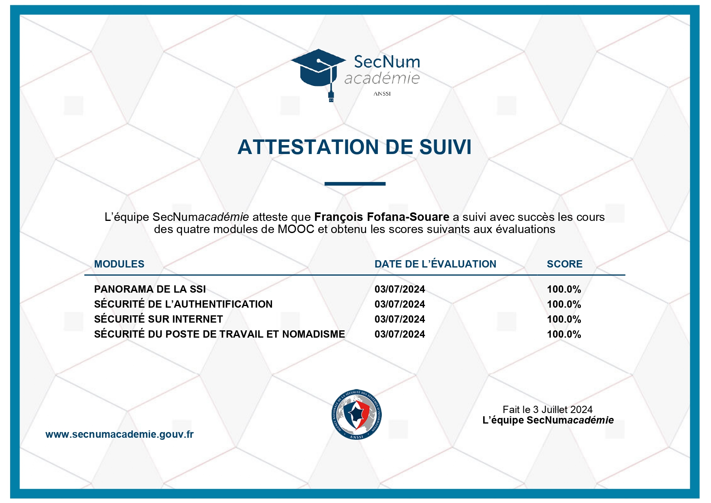

Certifications
Certification MOOC ANSSI
Obtenue en 2024
Formation sur les fondamentaux de la cybersécurité proposée par l'Agence Nationale de la Sécurité des Systèmes d'Information.
Cybersécurité
ANSSI

Voir les détails
Certification Cybersens
Obtenue le 4 juillet 2024
Programme de sensibilisation à la cybersécurité pour les jeunes, développant les compétences essentielles pour naviguer en toute sécurité sur internet.
Sensibilisation
Sécurité
 Voir les détails
Voir les détails
Certification CNIL
Obtenue en 2024
Formation sur la protection des données personnelles et le respect de la vie privée dans le cadre du RGPD.
RGPD
Protection des données
Certification SQL Simplilearn
Obtenue en 2024
Formation complète sur les bases de données SQL, incluant la conception, l'optimisation et la gestion des requêtes.
SQL
Bases de données
Voir les détails
Certification Cyber101
Obtenue en 2024
Formation fondamentale sur la cybersécurité, couvrant les concepts de base, les menaces courantes et les bonnes pratiques de sécurité.
Cybersécurité
Sécurité informatique
Cyber101
Voir les détails